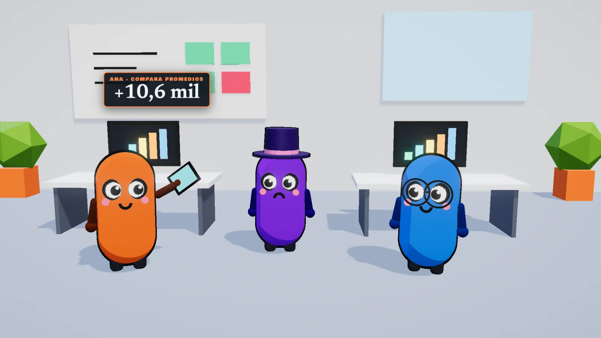
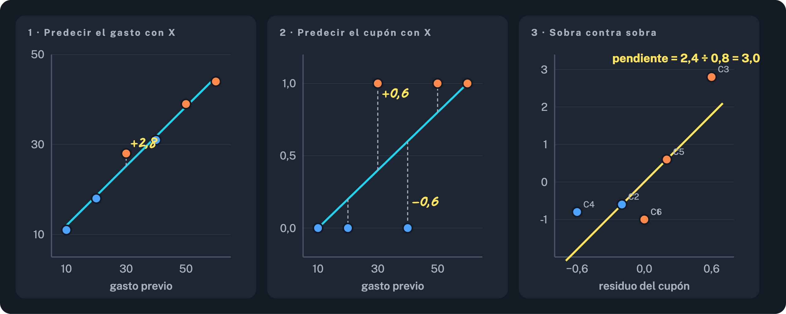
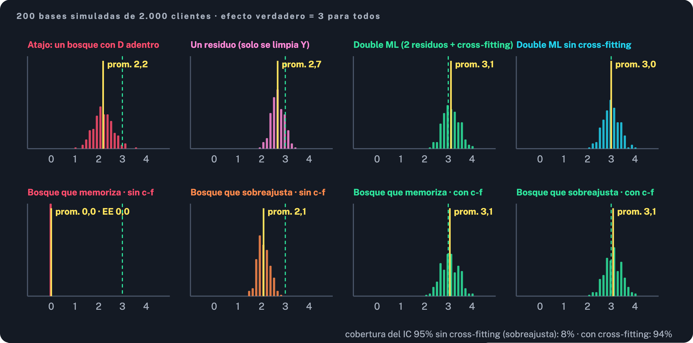
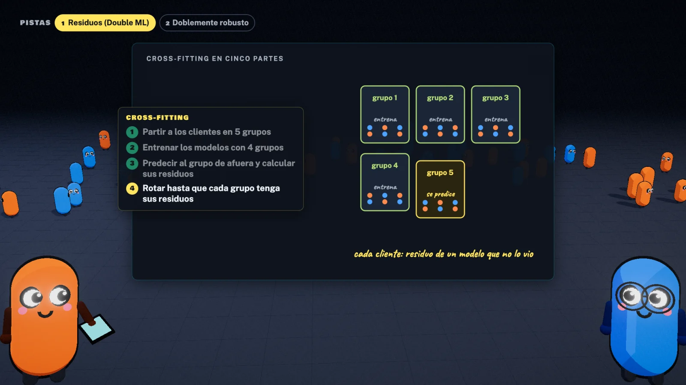
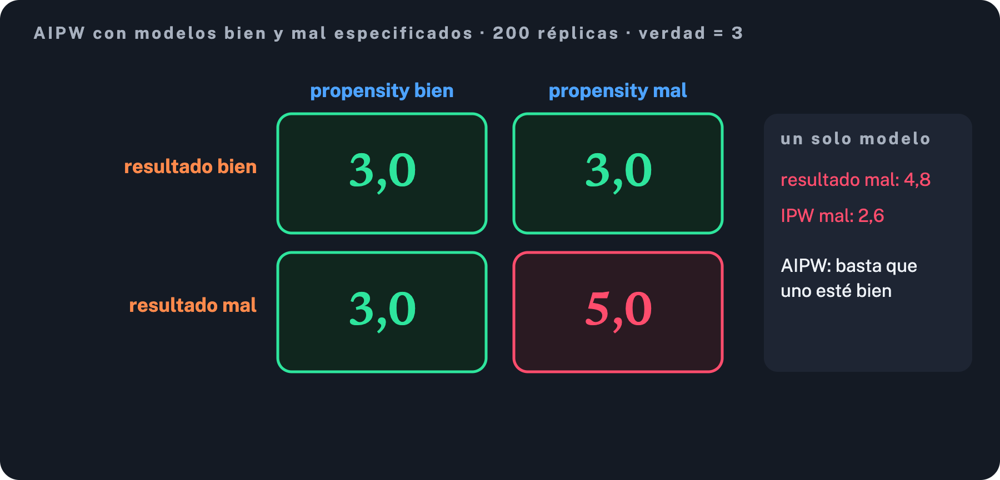
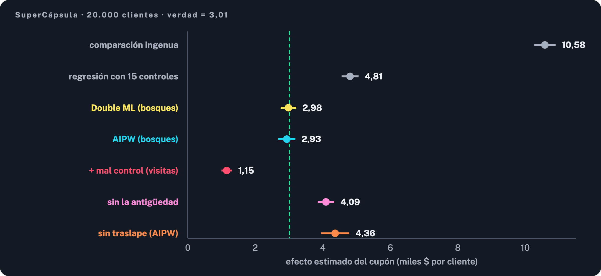

¿Funcionó el cupón? Limpiar los confusores observados con machine learning, paso a paso
En este capítulo.
Cuando el tratamiento no se sorteó, comparar promedios mezcla el efecto con el tipo de persona que lo recibió. Controlar por las características que confunden es la receta de siempre.
Controlar es limpiar (teorema de Frisch, Waugh y Lovell): se le quita al resultado y al tratamiento lo que las características explican, y se compara lo que sobra.
Esa limpieza es una predicción, así que se puede hacer con machine learning. Para que funcione hacen falta dos residuos (los errores de los dos modelos se multiplican) y cross-fitting (cada residuo sale de un modelo que no vio a esa persona). Eso es Double ML(Chernozhukov et al. 2018; Ahrens et al. 2025).
Una segunda ruta, doblemente robusta (AIPW), combina un modelo del resultado con la probabilidad de recibir el tratamiento: basta que uno de los dos esté bien.
El ML no arregla la identificación: confusores no observados, malos controles y falta de traslape siguen ahí.
Video. Este capítulo acompaña al video «Causal ML · Parte 1: ¿Funcionó el cupón?» (disponible próximamente). Las imágenes del capítulo son fotogramas de ese video.
Preparación
Todo el capítulo usa SuperCápsula y su app de fidelización. El mes pasado, la app le mandó un cupón de descuento a parte de sus 20.000 clientes, sin sortear: marketing se lo mandó sobre todo a los que más compraban. Queremos saber cuánto subió el gasto del mes siguiente (en miles de pesos) gracias al cupón.
Los datos son sintéticos (codigo/cml/gen_datos_cupon.py), así que conocemos la verdad: en promedio, el cupón sube el gasto en 3,01 mil pesos. Cada fila es un cliente, con:
D: recibió el cupón (0/1) e Y: gasto del mes siguiente;
quince características X: gasto previo, compras al mes, antigüedad, sensibilidad al precio, edad, ingreso de la comuna, distancia a la tienda, competidor cercano, reclamos, días desde la última compra, tamaño del hogar, si usa la app, notificaciones, apertura de correos y categoría favorita;
solo porque es sintético: tau (el efecto verdadero de cada cliente) y e (su probabilidad verdadera de recibir el cupón).
Los bosques de R (ranger) y de Python (scikit-learn) no son idénticos, así que las cifras con machine learningdifieren en el segundo decimal entre pestañas. Las del texto y las figuras son las de las simulaciones del tema (05 Causal ML/codigo, Python; el bosque causal del capítulo 2, grf en R).
4.1 El caso: comparar promedios

La gerenta pregunta si funcionó el cupón. Ana compara promedios; Bea recuerda que el cupón no se sorteó.
Los clientes con cupón gastaron 33,4 mil el mes siguiente y los sin cupón, 22,8: una diferencia de 10,6 mil. Pero los con cupón ya gastaban más antes (35,5 contra 22,4 mil), y la regla de marketing le mandó el cupón a 79 de cada 100 clientes «Oro» (gasto previo > 30 mil y más de dos años) y solo a 29 de cada 100 del resto.
Un confusor es una característica que empuja a la vez quién recibe el tratamiento y cuánto vale el resultado. Aquí, el gasto previo y ser cliente Oro. Si no se limpia, la comparación de promedios atribuye al cupón lo que en realidad es el tipo de cliente.
La receta de siempre es una regresión con controles: el gasto contra el cupón y las quince características. Da 4,8. Mejor que 10,6, pero lejos de 3,01: la regla de marketing tiene umbrales (el escalón de los clientes Oro, la caída de los inactivos) y una regresión lineal supone que cada característica pesa en línea recta.
4.2 Pista 1 · Controlar es limpiar: FWL en tres pasos
Para ver qué hace una regresión con controles, achiquemos el problema a seis clientes y una sola característica, el gasto previo. Cada número se puede seguir a mano.
cliente
gasto prev.
cupón
gasto sig.
Y predicho
resid. Y
D predicho
resid. D
rY × rD
rD²
C1
10
0
11
12,0
-1,0
0,0
0,0
0,00
0,00
C2
20
0
18
18,6
-0,6
0,2
-0,2
0,12
0,04
C3
30
1
28
25,2
2,8
0,4
0,6
1,68
0,36
C4
40
0
31
31,8
-0,8
0,6
-0,6
0,48
0,36
C5
50
1
39
38,4
0,6
0,8
0,2
0,12
0,04
C6
60
1
44
45,0
-1,0
1,0
0,0
0,00
0,00
Comparando promedios, los con cupón gastan 37,0 y los sin cupón 20,0: diferencia de 17,0. Pero los con cupón son los que más gastaban antes. La receta tiene tres pasos:
Predecir el gasto con X (una recta) y quedarse con lo que sobra: el residuo del gasto. Al tercer cliente la recta le predice 25,2 y gastó 28,0: le sobran 2,8.
Predecir el cupón con X y quedarse con lo que sobra: el residuo del cupón. A quien gastaba 30 mil le tocaba un cupón con probabilidad 0,4; el tercero sí lo recibió (le sobran 0,6), el cuarto no (le faltan 0,6). El primero y el sexto quedan con residuo cero: no aportan a la comparación.
Regresar sobra contra sobra. La pendiente es la suma de los productos dividida por la suma de los residuos del cupón al cuadrado.

Las tres bandejas del ejemplo. La pendiente de la nube limpia es exactamente el coeficiente del cupón en la regresión múltiple.
El coeficiente del cupón, como residuo sobre residuo\(\hat\theta\)efecto del cupón=\(\dfrac{\sum_i \tilde Y_i \tilde D_i}{\sum_i \tilde D_i^2}\)sobra del gasto × sobra del cupóncon números: \(2,4 \div 0,8 = 3,0\), igual que el coeficiente de D en la regresión del gasto contra el cupón y el gasto previo.
El residuo de una variable es lo que sobra después de predecirla con X: \(\tilde Y = Y - \hat{\mathbb E}[Y \mid X]\). El teorema de Frisch, Waugh y Lovell(Frisch y Waugh 1933; Lovell 1963) dice que el coeficiente de D en la regresión de Y sobre D y X es igual a la pendiente de \(\tilde Y\) sobre \(\tilde D\), con los residuos de regresiones lineales en X.
En SuperCápsula, con las quince características, la regresión múltiple da 4,81 y residuo sobre residuo da 4,81: idénticos hasta el último decimal.
Por qué funciona. Al residualizar el cupón le quitamos justo la parte que «se parece» al gasto previo. Lo que queda es su parte sorpresa, que no tiene nada en común con X. Una parte sorpresa solo puede moverse junto con el gasto si el cupón tiene efecto. La letra chica: con rectas, solo se quita lo que se parece en forma lineal.
Con los seis clientes, verifica a mano que \(\sum \tilde Y_i \tilde D_i = 2,4\) usando la tabla. ¿Qué pasa con la pendiente si al sexto cliente le cambias el gasto siguiente de 44 a 54? ¿Y si le cambias el cupón de 1 a 0?
TipSolución
Los productos son 0; 0,12; 1,68; 0,48; 0,12 y 0, que suman 2,4. Cambiar el gasto del sexto cliente no mueve la pendiente: su residuo del cupón es 0, así que su producto sigue siendo 0 (aunque cambia la recta del paso 1, la suma de productos con \(\tilde D\) no cambia, porque \(\tilde D\) es ortogonal a la constante y a X). Cambiarle el cupón sí la mueve: ahora tiene residuo del cupón distinto de cero y entra en la comparación.
4.3 De la recta al machine learning
Los pasos 1 y 2 son predicciones: predecir el gasto con X y predecir el cupón con X. Y predecir es lo que el machine learning hace bien. Si cambiamos la recta por un bosque aleatorio, el bosque sí ve el escalón de los clientes Oro.
\[Y = \theta D + g(X) + \varepsilon, \qquad D = m(X) + v .\] El efecto \(\theta\) es una constante, pero \(g\) y \(m\) pueden tener cualquier forma. Las predicciones \(\hat\ell(X) \approx \mathbb E[Y\mid X]\) y \(\hat m(X) \approx \mathbb E[D\mid X]\) se llaman modelos auxiliares (nuisance): no buscamos interpretarlos, solo sirven para limpiar. La idea de limpiar con predicciones flexibles es de Robinson (1988).
El supuesto no cambia. El método limpia lo que ve. Si hay un confusor que no está en los datos, ningún bosque lo encuentra (Sección 4.7).
4.4 Dos trampas: el atajo y el sobreajuste
Trampa 1, el atajo. ¿Para qué dos modelos? Metamos D y X en un solo bosque, prediciendo el gasto, y leamos el efecto prediciendo a cada cliente con D = 1 y con D = 0. Lo probamos en 200 bases simuladas de 2.000 clientes con efecto 3 para todos: el atajo da en promedio 2,2. El bosque regulariza: le baja el volumen a lo que ayuda poco a predecir, y entre dieciséis variables el cupón ayuda poco. Limpiar solo el gasto tampoco basta (2,7). Con los dos residuos, el promedio es 3,1.

Arriba, el atajo y el residuo único pierden parte del efecto; Double ML lo recupera. Abajo, un bosque que memoriza o sobreajusta, sin cross-fitting, se come el efecto; con cross-fitting vuelve a 3.
Ortogonalidad: los errores se multiplican. Con dos residuos, el resultado queda en el «fondo del valle» respecto de los modelos auxiliares: si uno se equivoca un poco, el efecto casi no se mueve. El sesgo que queda es del orden del error de un modelo por el error del otro (algo chico por algo chico). Esa propiedad se llama ortogonalidad de Neyman (Chernozhukov et al. 2018; Ahrens et al. 2025).
Trampa 2, el sobreajuste. Si el bosque se entrena con un cliente y después lo predice, puede recordar lo que gastó: su residuo queda artificialmente chico. En el extremo, con un bosque que memoriza, el residuo del gasto es cero para todos y el efecto estimado es 0,0, con error estándar 0,0: equivocado y muy seguro. Con un bosque que solo sobreajusta un poco, el efecto cae a 2,1 y el intervalo cubre el 3 solo 8 de cada 100 veces.
Con efecto verdadero cero, el sobreajuste no inventa un efecto (en la simulación, 0,1 en promedio). Lo que hace es comerse el efecto que sí existe: el modelo del gasto memoriza también la parte del gasto que viene del cupón.
Partir a los clientes en K grupos (aquí, 5).
Entrenar los modelos auxiliares con K − 1 grupos.
Predecir al grupo que quedó afuera y calcular sus residuos.
Rotar hasta que cada grupo tenga los suyos.
Así, cada cliente recibe su residuo de un modelo que nunca lo vio. No hay que confundirlo con la validación cruzada: las dos parten la muestra, pero la validación cruzada sirve para elegir un modelo y el cross-fitting para limpiar residuos.

Cinco bandejas que rotan: cada grupo recibe sus residuos de un modelo entrenado con los otros cuatro.
Con cross-fitting, los dos bosques problemáticos vuelven a 3,1 y 3,1. Con un bosque bien regularizado la diferencia es chica (3,0 sin y 3,1 con): el cross-fitting es un cinturón de seguridad.
4.5 La receta Double ML
Partir a los clientes en 5 grupos.
Para cada grupo, predecir el gasto con un modelo entrenado en los otros, y guardar el residuo del gasto \(\tilde Y\).
Lo mismo con el cupón: residuo del cupón \(\tilde D\).
Regresar \(\tilde Y\) contra \(\tilde D\): la pendiente es el efecto \(\hat\theta\).
Calcular el error estándar de esa regresión y el intervalo de confianza.
El error estándar de Double ML\(\widehat{\text{SE}}(\hat\theta)\)cuánto bailaría=\(\sqrt{\dfrac{1}{n}\,\dfrac{\overline{\left[(\tilde Y - \hat\theta\tilde D)\,\tilde D\right]^2}}{\left(\overline{\tilde D^2}\right)^2}}\)el sándwich de la regresión finalcon números: \(\hat\theta = 2,98\), SE \(= 0,12\), IC 95% \([2,75;\ 3,21]\). La verdad es 3,01.
r <-residuos_cf(Y, D, X, K =5, seed =2) # pasos 1 a 3 (bosques de ranger)round(plr(r$rY, r$rD), 3) # pasos 4 y 5
theta se lo hi
2.944 0.116 2.717 3.171
# lo mismo con el paquete DoubleML (Bach et al., 2024)set.seed(10)dat <- DoubleMLData$new(cbind(Y, D, X), y_col ="Y", d_cols ="D", x_cols = XC)dml <- DoubleMLPLR$new(dat, ml_l =lrn("regr.ranger", num.trees =300, min.node.size =20, mtry =6),ml_m =lrn("classif.ranger", num.trees =300, min.node.size =20, mtry =6), n_folds =5)dml$fit(); dml$summary()
Estimates and significance testing of the effect of target variables
Estimate. Std. Error t value Pr(>|t|)
D 2.9445 0.1164 25.31 <2e-16 ***
---
Signif. codes: 0 '***' 0.001 '**' 0.01 '*' 0.05 '.' 0.1 ' ' 1
p = cml.dml_plr(Y, D, X, seed=10) # pasos 1 a 5 (bosques de scikit-learn), la corrida del video{k: round(float(p[k]), 3) for k in ["theta", "se", "lo", "hi"]}
# lo mismo con el paquete doublemlimport doubleml as dmlfrom sklearn.ensemble import RandomForestRegressor, RandomForestClassifierdat = dml.DoubleMLData(df[["Y", "D"] + XC], y_col="Y", d_cols="D", x_cols=XC)m = dml.DoubleMLPLR(dat, RandomForestRegressor(300, min_samples_leaf=20, max_features=0.4, random_state=1, n_jobs=-1), RandomForestClassifier(300, min_samples_leaf=20, max_features=0.4, random_state=1, n_jobs=-1), n_folds=5)m.fit().summary.round(3)
coef std err t P>|t| 2.5 % 97.5 %
D 2.988 0.117 25.48 0.0 2.758 3.218
En SuperCápsula, Double ML da 2,98 con IC \([2,75;\ 3,21]\), y cubre la verdad. No depende de la suerte del corte: con otras cuatro particiones da entre 2,96 y 2,99, y con boosting en vez de bosques, 3,01.
Si el efecto cambia entre clientes, el modelo parcialmente lineal no estima el efecto promedio (ATE): estima un promedio ponderado por \(e(X)\,(1-e(X))\), que pesa más a los clientes con probabilidad de cupón cercana a ½. En nuestros datos ese promedio vale 3,07 y el ATE 3,01: la regla de marketing del generador se calibró para que coincidieran. Si lo que se quiere es el ATE con efectos heterogéneos, la ruta es la de la sección siguiente (en DoubleML, DoubleMLIRM).
Bach et al. (2024) muestran por simulación que modelos auxiliares mal afinados sesgan el efecto. Recomiendan afinarlos (con toda la muestra o por grupo) y reportar su capacidad predictiva. En SuperCápsula, el bosque explica 62% de la varianza del gasto y 22% de la del cupón.
4.6 Pista 2 · Doblemente robusto (AIPW)
El propensity score de un cliente es su probabilidad de recibir el cupón, dadas sus características: \(e(X) = \Pr(D = 1 \mid X)\). Un cliente Oro tiene un propensity alto; uno ocasional, bajo.
Con un modelo, predecir para cada cliente cuánto gastaría con cupón, \(\hat\mu_1(X)\), y sin cupón, \(\hat\mu_0(X)\). La resta es una primera estimación de su efecto.
Con otro modelo, estimar su propensity\(\hat e(X)\).
Corregir con el error observado: si recibió el cupón, sumar \((Y - \hat\mu_1)/\hat e\); si no, restar \((Y - \hat\mu_0)/(1-\hat e)\).
Promediar los aportes de todos los clientes. Con cross-fitting en los pasos 1 y 2, es el Double ML para el efecto promedio.
Aporte de un cliente al estimador doblemente robusto\(\hat\psi_i\)aporte=\(\hat\mu_1(X_i) - \hat\mu_0(X_i)\)predicción+\(\dfrac{D_i\,(Y_i - \hat\mu_1(X_i))}{\hat e(X_i)}\)error con cupón−\(\dfrac{(1-D_i)\,(Y_i - \hat\mu_0(X_i))}{1-\hat e(X_i)}\)error sin cupóncon números de juguete: un cliente con cupón, \(\hat\mu_1 = 30\), \(\hat\mu_0 = 27\), gastó 32, \(\hat e = 0,5\): aporte \(= 3 + 4 = 7\). El ATE es el promedio de los aportes.
En SuperCápsula, AIPW da 2,93, con IC \([2,68;\ 3,19]\). Cubre la verdad.
¿Por qué «doblemente robusto»? Tiene dos motores: el modelo del resultado y el del propensity. Si el del resultado es bueno, los errores promedian cero y la corrección no hace daño. Si es malo, los errores pesados por la probabilidad reconstruyen lo que falta (Robins et al. 1994; Bang y Robins 2005).

AIPW con modelos bien y mal especificados: basta que uno de los dos esté bien.
Dividir por \(\hat e\) es peligroso cuando la probabilidad es casi 0 o casi 1: un cliente con \(e = 1/100\) que recibió el cupón pesa como 100. En una variante del caso donde marketing aplica la regla casi sin excepciones, 21 de cada 100 clientes tienen \(e < 0{,}02\) o \(e > 0{,}98\), y AIPW da 4,4 (verdad 3,0). Recortar los pesos no lo arregla: no hay clientes comparables. Antes de estimar, se mira el histograma de \(\hat e\) en los dos grupos.
4.7 Lo que el machine learning no arregla

Con 15 características bien elegidas, Double ML acierta. Un mal control, un confusor que falta o la falta de traslape lo hacen fallar, a veces con mucha confianza.
Un mal control. Si agregamos las visitas a la tienda del mes siguiente, que ocurren después del cupón, Double ML da 1,2 con IC \([1,0;\ 1,3]\). El cupón sube el gasto en parte porque la gente va más a la tienda: controlar por las visitas le quita al cupón justo el camino por donde funciona.
Un confusor no observado. Sin la antigüedad no se puede reconstruir quién es Oro, y Double ML da 4,1 (sin antigüedad ni gasto previo, 4,9).
Falta de traslape (arriba).
Hünermund, Louw y Caspi (2023) muestran que «tirarle todas las variables al algoritmo» puede meter malos controles y sesgar Double ML. Qué variables entran se decide con el DAG (clase 5), no con el algoritmo. Para confusores no observados hay cotas de sensibilidad hechas para Double ML (Chernozhukov et al. 2021).
Ejercicios
Corre Double ML sin cross-fitting con un bosque que memoriza (min.node.size = 1 y sin remuestreo en ranger: replace = FALSE, sample.fraction = 1) para el gasto, y con el bosque regularizado para el cupón. ¿Qué pasa con \(\hat\theta\) y con su error estándar? Explica por qué.
TipSolución
m_y <-ranger(x = X, y = Y, num.trees =100, min.node.size =1, replace =FALSE, sample.fraction =1)rY <- Y -predict(m_y, data = X)$predictions # ≈ 0 para todos: el bosque memorizórD <- D -pred_d(bosque_d(X, D), X)plr(rY, rD) # θ ≈ 0 y SE ≈ 0
El bosque que memoriza predice exactamente el gasto de cada cliente que vio, así que el residuo del gasto es cero y la pendiente también. El error estándar también es casi cero: el método «está seguro» de un efecto nulo. Con cross-fitting (residuos_cf), el mismo bosque vuelve a dar cerca de 3.
Agrega la variable visitas_sig (visitas del mes siguiente) a las características y vuelve a correr Double ML. ¿Cuánto da? Dibuja el DAG con D, Y, X y las visitas y explica qué camino se cortó.
Da alrededor de 1,2, con un intervalo angosto. Las visitas son un mediador: D → visitas → Y. Controlar por ellas bloquea ese camino, y el efecto que queda es solo el que no pasa por ir más a la tienda. No es un confusor: ocurre después del tratamiento.
Calcula \(\hat e(X)\) con cross-fitting y haz el histograma separado por grupo. ¿Hay clientes con \(\hat e < 0{,}05\) o \(\hat e > 0{,}95\)? ¿Cuál es el peso más grande que entra en AIPW con el recorte de 0,01?
TipSolución
hist(nu$e[D ==1], col =rgb(1, .5, .2, .5), main ="", xlab ="e(X)"); hist(nu$e[D ==0], col =rgb(.2, .5, 1, .5), add =TRUE)max(ifelse(D ==1, 1/pmax(nu$e, .01), 1/pmax(1- nu$e, .01)))
En el caso hay traslape: casi todas las probabilidades están entre 0,05 y 0,95 y el peso más grande ronda 19. En la variante sin traslape, el peso llega al tope del recorte (1000 con recorte 0,001).
Este capítulo se armó a partir de un sondeo de la literatura (surveys primero, luego papers de 2021–2026 y el software vigente):
Ahrens et al. (2025), la introducción de referencia a Double ML (Ahrens et al. 2025), y el paper original de Chernozhukov et al. (2018)(Chernozhukov et al. 2018). El libro abierto de Chernozhukov, Hansen, Kallus, Spindler y Syrgkanis tiene el mismo arco, con notebooks en R y Python (Chernozhukov et al. 2024).
Software: DoubleML en R y Python (Bach, Kurz, et al. 2024); grf (R) y econml (Python) en el capítulo 2.
Referencias
Ahrens, Achim, Victor Chernozhukov, Christian Hansen, Damian Kozbur, Mark Schaffer, y Thomas Wiemann. 2025. An Introduction to Double/Debiased Machine Learning. arXiv:2504.08324 (v2, feb-2026); aceptado en Journal of Economic Literature según el portal de Heriot-Watt. https://arxiv.org/abs/2504.08324.
Bach, Philipp, Malte S. Kurz, Victor Chernozhukov, Martin Spindler, y Sven Klaassen. 2024. «DoubleML: An Object-Oriented Implementation of Double Machine Learning in R». Journal of Statistical Software 108 (3). https://doi.org/10.18637/jss.v108.i03.
Bach, Philipp, Oliver Schacht, Victor Chernozhukov, Sven Klaassen, y Martin Spindler. 2024. «Hyperparameter Tuning for Causal Inference with Double Machine Learning: A Simulation Study». Proceedings of the Third Conference on Causal Learning and Reasoning (CLeaR), PMLR, vol. 236. https://arxiv.org/abs/2402.04674.
Chernozhukov, Victor, Denis Chetverikov, Mert Demirer, et al. 2018. «Double/debiased machine learning for treatment and structural parameters». The Econometrics Journal 21 (1): C1-68. https://doi.org/10.1111/ectj.12097.
Chernozhukov, Victor, Carlos Cinelli, Whitney Newey, Amit Sharma, y Vasilis Syrgkanis. 2021. Long Story Short: Omitted Variable Bias in Causal Machine Learning. arXiv:2112.13398; NBER w30302. https://arxiv.org/abs/2112.13398.
Chernozhukov, Victor, Christian Hansen, Nathan Kallus, Martin Spindler, y Vasilis Syrgkanis. 2024. Applied Causal Inference Powered by ML and AI. https://causalml-book.org.
Frisch, Ragnar, y Frederick V. Waugh. 1933. «Partial Time Regressions as Compared with Individual Trends». Econometrica 1 (4): 387-401.
Hünermund, Paul, Beyers Louw, y Itamar Caspi. 2023. «Double machine learning and automated confounder selection: A cautionary tale». Journal of Causal Inference 11 (1). https://doi.org/10.1515/jci-2022-0078.
Knaus, Michael C. 2022. «Double machine learning-based programme evaluation under unconfoundedness». The Econometrics Journal 25 (3): 602-27. https://doi.org/10.1093/ectj/utac015.
Lovell, Michael C. 1963. «Seasonal adjustment of economic time series and multiple regression analysis». Journal of the American Statistical Association 58: 993-1010.
Robins, James M., Andrea Rotnitzky, y Lue Ping Zhao. 1994. «Estimation of Regression Coefficients When Some Regressors are not Always Observed». Journal of the American Statistical Association.